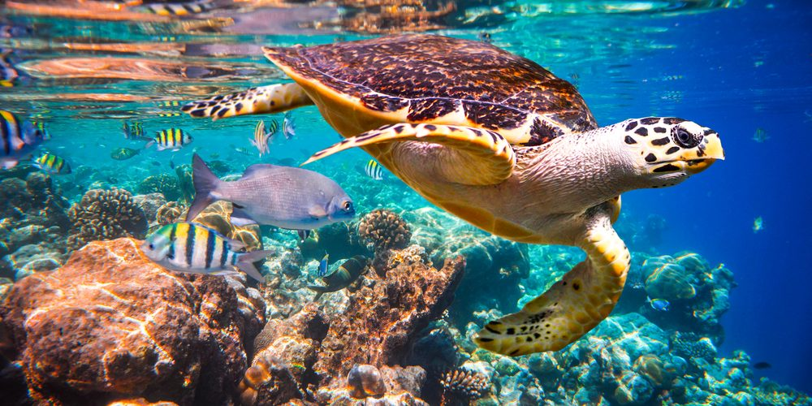

About Our Idea
Save The Turtles
Our Idea is to save the turtles and to take care of them
Six of seven species of sea turtles around the world are endangered
or threatened but there are many ways
that anyone can help!
Here are a few ways you can support conservation of wild sea turtles around the world: